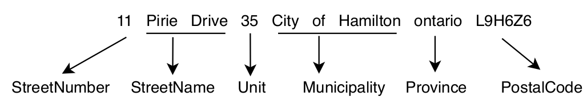

Sequence Tagging With an RNN
Note
See the notebook here
Run in Google Colab
In this example, we will do sequence tagging with RNNs using Poutyne.
Let’s import all the needed packages.
import contextlib
import os
import pickle
import re
import sys
from io import TextIOBase
import fasttext
import fasttext.util
import requests
import numpy as np
import torch
import torch.nn as nn
import torch.optim as optim
from torch.nn.utils.rnn import pad_packed_sequence, pack_padded_sequence, pad_sequence, PackedSequence
from torch.utils.data import DataLoader
from poutyne import set_seeds, Model
Also, we need to set Python’s, NumPy’s and PyTorch’s seeds by using Poutyne function so that our training is (almost) reproducible.
set_seeds(42)
Train a Recurrent Neural Network (RNN)
We train an RNN, or more precisely, an LSTM, to predict the sequence of tags associated with a given address, which is also known as address parsing.
This task consists of detecting, by tagging, the different parts of an address such as the civic number, the street name or the postal code (or zip code). The following figure shows an example of such a tagging.
Since addresses are written in a predetermined sequence, RNN is the best way to crack this problem. For our architecture, we will use two components, an RNN and a fully-connected layer.
Training Constants
Now, let’s set our training constants. We first have the CUDA device used for training if one is present. Second, we set the batch size (i.e. the number of elements to see before updating the model) and the learning rate for the optimizer.
cuda_device = 0
device = torch.device("cuda:%d" % cuda_device if torch.cuda.is_available() else "cpu")
batch_size = 32
lr = 0.1
RNN
For the first component, instead of using a vanilla RNN, we use a variant of it, known as a long short-term memory (LSTM) (to learn more about LSTM. For now, we use a single-layer unidirectional LSTM.
Also, since our data is textual, we will use the well-known word embeddings to encode the textual information. The LSTM input and hidden state dimensions will be of the same size. This size corresponds to the word embeddings dimension, which in our case will be the French pre trained fastText embeddings of dimension 300.
Note
See this discussion for the explanation why we use the batch_first argument.
dimension = 300
num_layer = 1
bidirectional = False
lstm_network = nn.LSTM(input_size=dimension,
hidden_size=dimension,
num_layers=num_layer,
bidirectional=bidirectional,
batch_first=True)
Fully-connected Layer
We use this layer to map the representation of the LSTM (300) to the tag space (8, the number of tags) and predict the most likely tag using a softmax.
input_dim = dimension # the output of the LSTM
tag_dimension = 8
fully_connected_network = nn.Linear(input_dim, tag_dimension)
The Dataset
Now let’s download our dataset; it’s already split into a train, valid and test set using the following.
def download_data(saving_dir, data_type):
"""
Function to download the dataset using data_type to specify if we want the train, valid or test.
"""
root_url = "https://graal-research.github.io/poutyne-external-assets/tips_and_tricks_assets/{}.p"
url = root_url.format(data_type)
r = requests.get(url)
os.makedirs(saving_dir, exist_ok=True)
open(os.path.join(saving_dir, f"{data_type}.p"), 'wb').write(r.content)
download_data('./datasets/addresses/', "train")
download_data('./datasets/addresses/', "valid")
download_data('./datasets/addresses/', "test")
Now let’s load in memory the data.
train_data = pickle.load(open("./datasets/addresses/train.p", "rb")) # 80,000 examples
valid_data = pickle.load(open("./datasets/addresses/valid.p", "rb")) # 20,000 examples
test_data = pickle.load(open("./datasets/addresses/test.p", "rb")) # 30,000 examples
If we take a look at the training dataset, it’s a list of 80,000 tuples where the first element is the full address, and the second element is a list of the tag (the ground truth).
train_data[0:2]
Here a snapshot of the output:

Since the address is a text, we need to convert it into categorical value, such as word embeddings, for that we will use a vectorizer. This embedding vectorizer will be able to extract for every word embedding value.
class EmbeddingVectorizer:
def __init__(self):
"""
Embedding vectorizer
"""
fasttext.util.download_model('fr', if_exists='ignore')
self.embedding_model = fasttext.load_model("./cc.fr.``300``.bin")
def __call__(self, address):
"""
Convert address to embedding vectors
:param address: The address to convert
:return: The embeddings vectors
"""
embeddings = []
for word in address.split():
embeddings.append(self.embedding_model[word])
return embeddings
embedding_model = EmbeddingVectorizer()
We also need a vectorizer to convert the address tag (e.g. StreetNumber, StreetName) into categorical values. So we will use a Vectorizer class that can use the embedding vectorizer and convert the address tag. We will explain and use the argument predict later.
class Vectorizer:
def __init__(self, dataset, embedding_model, predict=False):
self.data = dataset
self.embedding_model = embedding_model
self.predict = predict
self.tags_set = {
"StreetNumber": 0,
"StreetName": 1,
"Unit": 2,
"Municipality": 3,
"Province": 4,
"PostalCode": 5,
"Orientation": 6,
"GeneralDelivery": 7
}
def __len__(self):
# for the dataloader
return len(self.data)
def __getitem__(self, item):
data = self.data[item]
if not self.predict:
address = data[0]
address_vector = self.embedding_model(address)
tags = data[1]
idx_tags = self._convert_tags_to_idx(tags)
return address_vector, idx_tags
address_vector = self.embedding_model(data)
return address_vector
def _convert_tags_to_idx(self, tags):
idx_tags = []
for tag in tags:
idx_tags.append(self.tags_set[tag])
return idx_tags
train_data_vectorize = Vectorizer(train_data, embedding_model)
valid_data_vectorize = Vectorizer(valid_data, embedding_model)
test_data_vectorize = Vectorizer(test_data, embedding_model)
DataLoader
Now, since all the addresses are not of the same size, it is impossible to batch them together since all elements of a tensor must have the same lengths. But there is a trick, padding!
The idea is simple. We add empty tokens at the end of each sequence up to the longest one in a batch. For the word vectors, we add vectors of 0 as padding. For the tag indices, we pad with -100s. We do so because of the CrossEntropyLoss, the accuracy metric and the F1 metric all ignore targets with values of -100.
To do this padding, we use the collate_fn argument of the PyTorch DataLoader and on running time, that process will be done. One thing to take into account, since we pad the sequence, we need each sequence’s lengths to unpad them in the forward pass. That way, we can pad and pack the sequence to minimize the training time (read this good explanation of why we pad and pack sequences).
def pad_collate_fn(batch):
"""
The collate_fn that can add padding to the sequences so all can have
the same length as the longest one.
Args:
batch (List[List, List]): The batch data, where the first element
of the tuple are the word idx and the second element are the target
label.
Returns:
A tuple (x, y). The element x is a tensor of packed sequence .
The element y is a tensor of padded tag indices. The word vectors are
padded with vectors of 0s and the tag indices are padded with -100s.
Padding with -100 is done because of the cross-entropy loss and the
accuracy metric ignores the targets with values -100.
"""
# This gets us two lists of tensors and a list of integer.
# Each tensor in the first list is a sequence of word vectors.
# Each tensor in the second list is a sequence of tag indices.
# The list of integer consist of the lengths of the sequences in order.
sequences_vectors, sequences_labels, lengths = zip(*[
(torch.FloatTensor(np.stack(seq_vectors)), torch.LongTensor(labels), len(seq_vectors))
for (seq_vectors, labels) in sorted(batch, key=lambda x: len(x[0]), reverse=True)
])
lengths = torch.LongTensor(lengths)
padded_sequences_vectors = pad_sequence(sequences_vectors, batch_first=True, padding_value=0)
pack_padded_sequences_vectors = pack_padded_sequence(
padded_sequences_vectors, lengths.cpu(), batch_first=True
) # We pack the padded sequence to improve the computational speed during training
padded_sequences_labels = pad_sequence(sequences_labels, batch_first=True, padding_value=-100)
return pack_padded_sequences_vectors, padded_sequences_labels
train_loader = DataLoader(train_data_vectorize, batch_size=batch_size, shuffle=True, collate_fn=pad_collate_fn)
valid_loader = DataLoader(valid_data_vectorize, batch_size=batch_size, collate_fn=pad_collate_fn)
test_loader = DataLoader(test_data_vectorize, batch_size=batch_size, collate_fn=pad_collate_fn)
Full Network
Since our sequences are of variable lengths and we want to be the most efficient possible by packing them, we cannot use the PyTorch Sequential class to define our model, so we define the forward pass for it to pack and unpack the sequences (again, you can read this good explanation of why we pad and pack sequences).
class FullNetWork(nn.Module):
def __init__(self, lstm_network, fully_connected_network):
super().__init__()
self.hidden_state = None
self.lstm_network = lstm_network
self.fully_connected_network = fully_connected_network
def forward(self, pack_padded_sequences_vectors: PackedSequence):
"""
Defines the computation performed at every call.
"""
lstm_out, self.hidden_state = self.lstm_network(pack_padded_sequences_vectors)
lstm_out, _ = pad_packed_sequence(lstm_out, batch_first=True)
tag_space = self.fully_connected_network(lstm_out)
return tag_space.transpose(-1, 1) # We need to transpose since it's a sequence
full_network = FullNetWork(lstm_network, fully_connected_network)
Summary
So we have created an LSTM network (lstm_network), a fully connected network (fully_connected_network), those two components are used in the full network. This full network used padded, packed sequences (defined in the forward pass), so we created the pad_collate_fn function to process the needed work. The DataLoader will conduct that process. Finally, when we load the data, this will be done using the vectorizer, so the address will be represented using word embeddings. Also, the address components will be converted into categorical value (from 0 to 7).
Now that we have all the components for the network let’s define our SGD optimizer.
The Training Loop
Now that we have all the components for the network let’s train our model.
optimizer = optim.SGD(full_network.parameters(), lr)
loss_function = nn.CrossEntropyLoss()
model = Model(full_network, optimizer, loss_function,
batch_metrics=['accuracy'],
device=device)
model.fit_generator(train_loader, valid_loader, epochs=10)
test_loss, test_acc = model.evaluate_generator(test_loader)
Predict on New Data
Now, let say we want to predict using our trained model. For these new addresses, we will only have the address and not the tags. Let us download this dataset.
download_data('./datasets/addresses/', "predict")
predict_data = pickle.load(open("./datasets/addresses/predict.p", "rb")) # 30,000 examples
predict_data[0:2]
Here a snapshot of the output:

We also need to reuse the vectorizer, but now with the predict argument set to True since we cannot parse the ground truth.
predict_data_vectorized = Vectorizer(predict_data, embedding_model, predict=True)
We need to change a little the pad_collate_fn since we also pad the labels.
def pad_collate_fn_predict(batch):
"""
The collate_fn add padding to the sequences so all can have
the same length as the longest one.
Args:
batch (List[List]): The batch data of the word idx.
Returns:
A tuple (x, y). The element x is a tensor of padded word vectors, and y
their respective lengths of the sequences. The word vectors are padded with vectors of 0s.
"""
# This gets us two lists of tensors and a list of integers.
# Each tensor in the first list is a sequence of word vectors.
# The list of integers consists of the lengths of the sequences in order.
sequences_vectors, lengths = zip(*[
(torch.FloatTensor(seq_vectors), len(seq_vectors))
for seq_vectors in sorted(batch, key=lambda x: len(x), reverse=True)
])
lengths = torch.LongTensor(lengths)
padded_sequences_vectors = pad_sequence(sequences_vectors, batch_first=True, padding_value=0)
pack_padded_sequences_vectors = pack_padded_sequence(padded_sequences_vectors, lengths.cpu(), batch_first=True)
return pack_padded_sequences_vectors
predict_loader = DataLoader(predict_data_vectorized,
batch_size=batch_size,
collate_fn=pad_collate_fn_predict,
num_workers=2)
Now, let’s predict using the predict_generator but without concatenating the returns since batches are not always the same size.
predictions = model.predict_generator(predict_loader, concatenate_returns=False)
Or using the predict_dataset method:
predictions = model.predict_dataset(predict_data_vectorized,
batch_size=batch_size,
collate_fn=pad_collate_fn_predict,
num_workers=2,
concatenate_returns=False)
But, as you can see, we have log probabilities of our model, so we need to take the highest probability per address element.
idx_predictions = []
for batch in predictions:
idx_predictions.extend(batch.argmax(axis=1).tolist()) # we take the highest argument (so the tag idx).
To convert those indexes into tags, we only need to convert them back using the inverse of the previous tags_to_idx dictionary.
idx_to_tags = {
0: "StreetNumber",
1: "StreetName",
2: "Unit",
3: "Municipality",
4: "Province",
5: "PostalCode",
6: "Orientation",
7: "GeneralDelivery"
}
tags_predictions = []
for address in idx_predictions:
tags_predictions.append([idx_to_tags.get(tag) for tag in address])
tags_predictions[0:2]
Here a snapshot of the output: